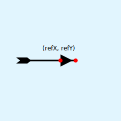
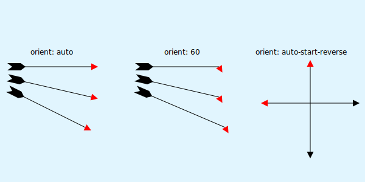
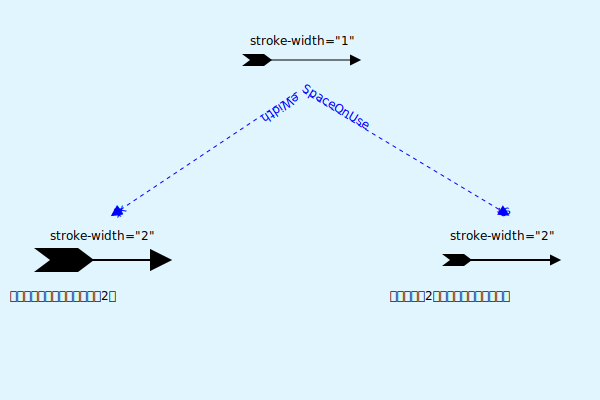

svg 之 marker
如何使用 SVG 绘制一支 弓箭 ?

绘制难点在于如何处理箭头和箭羽。要解决这个问题，就得借助 marker 元素。
定义
marker 元素，顾名思义，用于标记 path、line、polyline 或 polygon 元素的顶点（起点、终点等）。它是一种引用元素。即定义时不会显示，在被引用时才会显示。因此，最好将其定义在 <defs> 标签内。
<defs>
<marker>
<!-- 定义marker -->
</marker>
</defs>
属性
id
通过
"id"来引用对应的 marker 元素<defs id="arrow"> <marker> <!-- 定义marker --> </marker> </defs>markerWidth 与 markerHeight
指定 marker 元素的 viewport 的宽和高。默认值
markerWidth: 3,markerHeight: 3。<defs > <marker markerWidth="30" markerHeight="12"> <!-- 定义marker --> </marker> </defs>refX 与 refY
指定 marker 元素的 引用 x、y 坐标。用于与被引用元素的顶点。
- refX：left|center|right 或 坐标数值。默认值为 0。
- refY：top|center|bottom 或 坐标数值。默认值为 0。
<defs >
<marker refX="left" refY="center">
<!-- 定义marker -->
</marker>
</defs>

orient
指定 marker 的方向，默认值为 0。
- auto：以 X 轴的方向为起始方向，旋转到路径的方向上。
- auto-start-reverse：如果以
marker-start方式引用 marker 元素，则旋转 180 度。 其他则与auto一样。 - 弧度：以 X 轴的方向为起始方向，旋转到指定的弧度。

markerUnits
用于确定 marker 坐标系统的使用单位。默认值
"strokeWidth"。strokeWidth：相对于
stroke-width进行计算。userSpaceOnUse：绝对单位。

viewBox 与 preserveAspectRatio
关于 viewBox 与 preserveAspectRatio 已做过相关介绍，可以参考之前文章：svg之viewBox。
引用
marker-start="url(#marker-id)"：引用 marker 元素与路径的起点对齐。marker-mid="url(#marker-id)"： 引用 marker 元素与除起点、终点外的其他顶点对齐。marker-end="url(#marker-id)"：引用 marker 元素与路径的终点对齐。